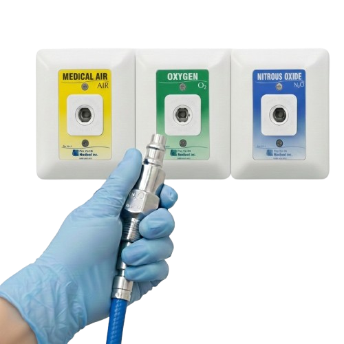

เน้นย้ำมาตรฐานความปลอดภัยในการใช้งานก๊าซทางการแพทย์
N2O รั่วไหลส่งผลต่อระบบประสาท
O2, N2O เป็นตัวเร่งไฟ เสี่ยงอัคคีภัย
ป้องกัน O-ring และอุปกรณ์เสื่อมสภาพ
ลดการสูญเสียก๊าซโดยเปล่าประโยชน์

Check & Unplug ทุกครั้งหลังจบเคส